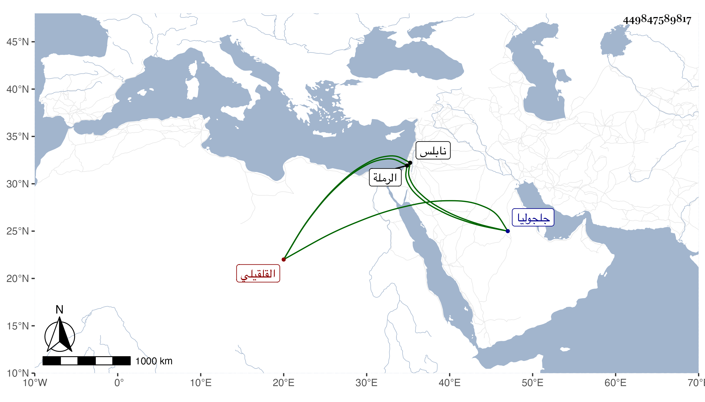

0902Sakhawi.DawLamic.ITO20230111-ara1.EIS1600.449847589817
Biography ID: 449847589817
القلقيلي بفتح أوله وكسر ثالثه بينهما لام نسبة لقلقيليا قرية بين الرملة ونابلس من أعمال جلجوليا الشهاب أحمد بن أبي بكر بن يوسف بن أيوب السكندري المقري والشمس محمد بن أحمد بن إبرهيم بن مفلح وابنه أحمد وابنه النجم محمد مشهور الأمر .
